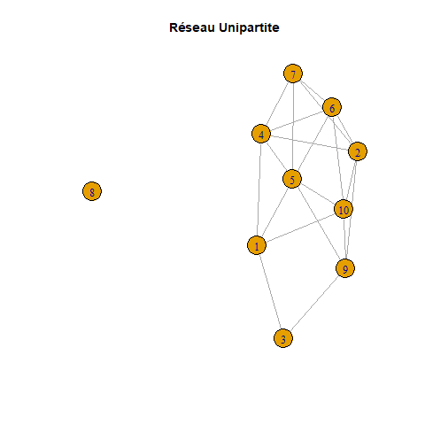

# Création d'un réseau unipartite
set.seed(42) # Pour la reproductibilité
unipartite <- erdos.renyi.game(10, 0.3)
unipartite_graph <- plot(unipartite, main = "Réseau Unipartite", width = 800, height = 600)
print(unipartite_graph)
# Création d'un réseau bipartite
# Noms des nœuds
nodes_A <- c("A1", "A2", "A3")
nodes_B <- c("B1", "B2", "B3", "B4")
# Liste des arêtes
edges <- c("A1", "B1", "A1", "B2","A2", "B1", "A2", "B2", "A2", "B3", "A3", "B2", "A3", "B4")
# Création du graphe
g <- graph(edges, directed = FALSE)
V(g)$type <- bipartite_mapping(g)$type
plot(g, layout = layout_as_bipartite, vertex.color = c("skyblue", "salmon")[V(g)$type + 1],
vertex.label.color = "black", vertex.shape = "circle", vertex.size = 30, edge.width = 2, main = "Réseau Bipartite")ManagHAL
Abstract
En 2017, AgroParisTech a signé l’Appel de Jussieu, visant à promouvoir la bibliodiversité, c’est-à-dire la diversité éditoriale pour éviter la domination des grands groupes. En 2020, l’institution a adopté une politique de ‘science ouverte’ pour faciliter la libre diffusion des résultats de la recherche scientifique et la transparence des processus de recherche. En réponse à ses engagements, le 2 janvier 2023, AgroParisTech crée une cellule HAL pour accompagner ses chercheurs dans l’utilisation de l’archive ouverte HAL. Cependant, un package R pour l’extraction et l’analyse des données HAL n’existait pas, ce qui a conduit à la mission de Théodore Vanrengterghem de développer le package ‘ManagHAL’. Par la suite, j’ai eu l’opportunité de reprendre le projet “ManagHAL” durant mon stage financé par la Direction de la Recherche et de l’Innovation d’AgroParisTech. Ainsi, j’ai pu travailler sur la mise en place de réseaux à partir des données, l’adaptation et l’intégration d’outils d’analyse statistique de réseaux tel que la modélisation en blocs stochastiques dans le package ‘ManagHAL’.
Keywords
R, Rstudio, ManagHAL, Réseaux, SBM, LBM
0.1 INTRODUCTION
En 2017, AgroParisTech signe l’Appel de Jussieu. Cet appel a été rédigé dans l’objectif de mettre en avant des engagements pour promouvoir la Bibliodiversité. La bibliodiversité correspond à la diversité dans le monde éditorial afin d’éviter une appropriation des espaces de ventes par des grands groupes éditeurs. Dans la continuité de la signature de l’Appel de Jussieu, AgroParisTech a adopté en 2020, une politique d’établissement « dédié à la science ouverte. » (AgroParisTech (2024) , voir : La science ouverte à AgroParisTech – Politique d’établissement janvier 2020). Pour AgroParisTech, la science ouverte correspond à l’ « ensemble des principes et des actions qui facilitent l’ouverture et la libre dissémination, à destination de l’ensemble de la société, des productions de la recherche scientifique, ainsi que la transparence et l’ouverture des processus de la recherche » (AgroParisTech (2024)) . Un exemple concret des principes appliqués par l’établissement sont les principes FAIR pour la gestion des données de recherches. Ces derniers stipulent que les données doivent être :
- Findable : facilement trouvable.
- Accessible : avec des conditions d’accès clairement définies.
- Interoperable : intégrable et capable d’interagir avec d’autres outils extérieurs ou données.
- Reusable : réutilisables, avec toutes les informations nécessaires à la compréhension de ces dernières et au cadre d’utilisation autorisé par les auteurs.
Afin de progresser vers l’accomplissement des objectifs énoncés par AgroParisTech, de nombreuses actions ont été mises en place. Notamment, la création, le 2 janvier 2023, d’une cellule HAL au sein de l’établissement. Cette cellule HAL est dirigée par la Direction de la Recherche, de l’Innovation et du Transfert Technologique et par la Direction de la Documentation et du Patrimoine Culturelle. La cellule a pour vocation à « organiser l’accompagnement de la communauté de recherche d’AgroParisTech dans son appropriation de l’archive ouverte HAL et des services associés [et à] veiller à la qualité des métadonnées et référentiels pour le portail HAL-AgroParisTech ».(AgroParisTech (2024) , voir : Cellule HAL d’AgroParisTech Missions et Services) HAL est « l’archive nationale choisie par la communauté scientifique et universitaire française pour la diffusion ouverte de ses résultats de recherche. » (Comité d’orientation du CCSD & Assemblée des partenaires HAL (2022)).
Bien qu’il existe des outils d’extraction de publications HAL et de création de rapport bibliographique en ligne comme ExtrHAL (LJonchere (n.d.)), il n’existe pas aujourd’hui de package R permettant d’extraire ces données et de réaliser des analyses statistiques sur ces dernières. C’est pourquoi l’unité de recherche Mathématiques et Informatiques Appliquées et la cellule HAL ont missionné Théodore Vanrengterghem pour la programmation d’un package R nommé “ManagHAL” réalisant l’extraction de donnée HAL et la création d’un bilan bibliographique.
R est un langage de programmation gratuit et en open-source, qui a été conçu pour réaliser des analyses statistiques et manipuler des données. Rstudio, est l’environnement de programmation gratuit utilisant le langage R. Dans Rstudio, il existe la possibilité de télécharger des packages. Ces derniers sont des fichiers contenant des fonctions et des données qui partagent un même thème. Ils sont très utilisés par les utilisateurs de Rstudio car les packages facilitent le développement. Il existe actuellement plus de 18000 packages en ligne.
Durant les 2 mois et 17 jours de mon stage, j’ai eu la chance d’être accueilli au sein du département Modélisation Mathématiques, Informatique, et Physique d’AgroParisTech Palaiseau dans l’unité de recherche Mathématiques et Informatiques Appliquées. J’ai eu l’opportunité d’être encadré par deux tuteurs nommés Julie Albert et Pierre Barbillon qui m’ont accompagné tout au long de cette expérience. L’unité Mathématiques et Informatiques Appliquées est composée de nombreux chercheurs, doctorants et stagiaire, et est hébergé au sein du bâtiment E d’AgroParisTech Palaiseau. J’ai travaillé sur l’adaptation, la programmation, et l’intégration d’outils de constructions de réseau, et d’outils d’analyse statistiques de réseau au package ManagHAL. J’ai donc pu travailler à la mise en forme du package, à la création de fonctions. Mon stage était financé par la Direction de la Recherche, de l’Innovation et du Transfert Technologique de la cellule HAL d’AgroParisTech présenté dans les paragraphes précédents.
Afin de comprendre les choix que j’ai réalisé lors du développement du package, il est nécessaire de présenter le package d’origine avant mes modifications, ses limitations. Un point rapide sera fait au cours de la partie contexte statistique sur les réseaux et les méthodes d’analyse statistique de réseau que j’ai utilisé. Le package “ManagHAL” contenait des fichiers essentiels dans la construction d’un package R tel que buildRignore (contenant la liste des fichiers à ignorer lors de la construction du package sur l’ordinateur de l’utilisateur). Il contenait aussi des fichiers de fonctions contenant les fonctions principales du package. Celles-ci permettent de récupérer toutes les publications associées à un unique ou à des multiples identifiants d’auteurs HAL, provenant d’un fichier tabulé d’identifiants fournie par les ressources humaines. Lors de la récupération, il est possible de spécifier les données des publications à récupérer. Ces dernières se présentent sous le format d’un fichier csv. Certaines de ces fonctions permettaient aussi de créer un rapport bibliographique automatique en ne donnant en entrée uniquement un identifiant auteur. Il existait des fonctions utiles au développement du package, afin de nettoyer mes données. Prenons par exemple “BorneDate” qui remplace les valeurs manquantes dans un vecteur de dates par une date limite spécifiée. Enfin, des fonctions permettaient réaliser des figures à partir des données des publications récupérés depuis HAL tel que des wordclouds ou des graphes.
à retravailler !!!
La finalité du package “ManagHAL” est de faciliter l’utilisation et la compréhension des données de publications. Afin de manipuler les données de publications et comprendre celles-ci, l’approche adoptée est de réaliser des réseaux et ensuite d’utiliser des outils d’analyse statistique de réseau. Les outils principaux utilisés à l’avenir dans “ManagHAL” seront les modélisations en blocs stochastiques ou latents. Mon mémoire est organisé de la manière suivante: En premier lieu, le contexte statistique nécessaire à la compréhension des outils utilisés est présenté. Puis, dans la partie suivante sont abordés, les méthodes informatiques développées et les résultats d’analyse de données-exemples obtenus. (pour lequel tout marche, précisez que je fais ça pcq mon stage n’est pas terminé). Dans un troisième temps, les méthodes déjà publiées utilisées sont précisées. Enfin, dans une ultime partie, les résultats sont discutés.
0.2 CONTEXTE STATISTIQUE
Cette partie est principalement basée sur la publication “Using Latent Block Models to Detect Structure in Ecological Networks” Aubert et al. (2022)
Un réseau d’interaction est composé de nœuds (les entités) et d’arêtes (les liens entre ces entités). Les réseaux sont répartis en deux groupes principaux: les réseaux Unipartites, où tous les nœuds sont du même type, et les réseaux Bipartites, où il y a deux types distincts de nœuds et les liens ne se forme qu’entre des nœuds de types différents. Les interactions dans un réseau peuvent être binaires ou pondérées. Un réseau peut être encodé dans une matrice \(Y\) telle que :
\[\begin{align*} Y_{ij} \neq 0 & \quad \text{si un lien existe entre les nœuds } i \text{ et } j, \\ Y_{ij} = 0 & \quad \text{si aucun lien n'existe entre les nœuds } i \text{ et } j. \end{align*}\]peut etre explique comment on peut coder un réseau ?
0.2.1 Exemples de réseaux en R
Vous trouverez ci-dessous des exemples de code R pour créer et visualiser des réseaux unipartite et bipartite.
 |  |
|
|Il existe plusieurs approches différentes pour analyser la structure d’un réseau. Dans ce mémoire, une seule approche sera considérée. Elle suppose l’existence de groupe fonctionnels partageant un même patron de connexion. Nous nous baserons par la suite sur une méthode possible pour cette approche: les modèles probabilistes génératifs.
Les Modèles en Bloc Stochastiques (aussi appelé SBM) sont des modèles probabilistes. Ils supposent que les nœuds d’un même réseau sont divisés en blocs (groupe, clusters) latents regroupant les entités ayant des modèles de connectivité similaires. Latents signifie qu’il n’y a pas d’apriori sur le type de structure recherchée (Aubert et al., 2022).
0.3 RESULTATS
Cette section présente les résultats obtenus au cours de mon stage. Elle est divisée en deux parties principales: les fonctions et algorithmes développés, modifiés ainsi que les résultats de leur application via un exemple. Cet exemple consistera en des données provenant des Ressources Humaines du Laboratoire MIA d’AgroPariTech. Chaque fonction est expliquée en détail, suivie des raisons justifiant son développement. Il est important de noter que mon stage se terminant le 26 juillet, Le package est donc encore en développement. Les fonctions présentées fonctionnent dans le cadre de l’exemple.
0.3.1 Accessibilité et généralité de ManagHAL
Lors de mon stage, j’ai d’abord décidé de rendre le package plus accessible et générique. Pour ce faire, il m’était nécessaire de réorganiser et modifier certaines fonctions déjà présentes codées par Théodore Vanrengterghem. J’ai commencé par modifier dans le fichier mia_table.R la fonction . J’ai fait le choix de renommer le fichier
0.3.1.1 Modifications de l’Algorithme load_mia_table
J’ai commencé par modifier dans le fichier mia_table.R la fonction load_mia_table. J’ai fait le choix de renommer le fichier load_table.R. J’ai remplacé la fonction load_mia_table par trois fonctions load_team_table_csv, load_team_table_url, et load_team_table. load_team_table_csv permet de charger un csv dans Rstudio depuis un fichier local de la machine de l’utilisateur. load_team_table_url permet de charger un csv dans Rstudio depuis un fichier en ligne. load_team_table fait appel aux deux fonctions précédentes et permet par le biais d’argument de fonctions de spécifier la provenance du fichier et de charger le csv soit depuis un url soit depuis un fichier local. J’ai aussi modifier la majorité des fonctions déjà présentes dans le package faisant appel à load_mia_table. J’ai ensuite crée une documentation via le package “Roxygène2” conforme aux critères requis pour un package mis en ligne.
La fonction original load_mia_table ne permettait que de charger de manière spécifique le csv fourni par les Ressources Humaines depuis un url seafile. Cette fonction n’était pas générique. Ainsi, il était nécéssaire de la modifier. J’ai décidé de diviser en trois fonctions différentes afin de permettre à l’utilisateur de choisir de charger des tables de provencance locale ou depuis internet. J’ai décidé pour load_team_table_url de garder en majeur partie le code d’origine et de simplement le réadapter par soucis de temps. load_team_table_csv est basé

0.3.1.2 Résultat de l’Application de load_team_table
Exemple par chatGPT
Description
La méthode optimisée a été appliquée à un jeu de données de grande taille pour évaluer sa performance en conditions réelles.
Résultats
Les résultats montrent une réduction du temps de traitement de 40% par rapport à l’algorithme original.

Essentiels vs Secondaires
Les résultats essentiels incluent la réduction du temps de traitement et l’amélioration de la scalabilité. Les résultats secondaires, détaillés en annexe, incluent des tests sur des jeux de données plus petits.
0.3.2 Conclusion des Résultats
Les méthodes développées au cours de ce stage ont permis d’améliorer significativement les performances des algorithmes existants. L’optimisation de l’algorithme X a réduit le temps de traitement de 40%, tandis que les ajustements apportés au modèle Y ont augmenté la précision de 5%. Ces résultats démontrent l’efficacité des approches choisies pour répondre aux limitations des méthodes précédentes.
0.4 DISCUSSION
0.5 ANNEXES
Exemple par chatGPT
0.5.1 Tableau des résultats détaillés
Voici les tableaux des résultats détaillés pour les différentes méthodes et tests effectués.

0.6 BIBLIOGRAPHIE
AgroParisTech. 2024. “Science Ouverte.” https://www.agroparistech.fr/recherche/science-ouverte.
Aubert, J., P. Barbillon, S. Donnet, and V. Miele. 2022. Using Latent Block Models to Detect Structure in Ecological Networks. Wiley. https://doi.org/10.1002/9781119902799.ch6.
Comité d’orientation du CCSD & Assemblée des partenaires HAL, Comité de pilotage et. 2022. “HAL, Archive Ouverte Construite En Commun Pour Partager Et Diffuser La Connaissance Scientifique.” https://www.ccsd.cnrs.fr/wp-content/uploads/2023/01/DeclarationPolitiqueFR_VF.pdf.
LJonchere, C. et al. n.d. “ExtrHAL - HALUR.” https://halur1.univ-rennes1.fr/ExtrHAL.php.